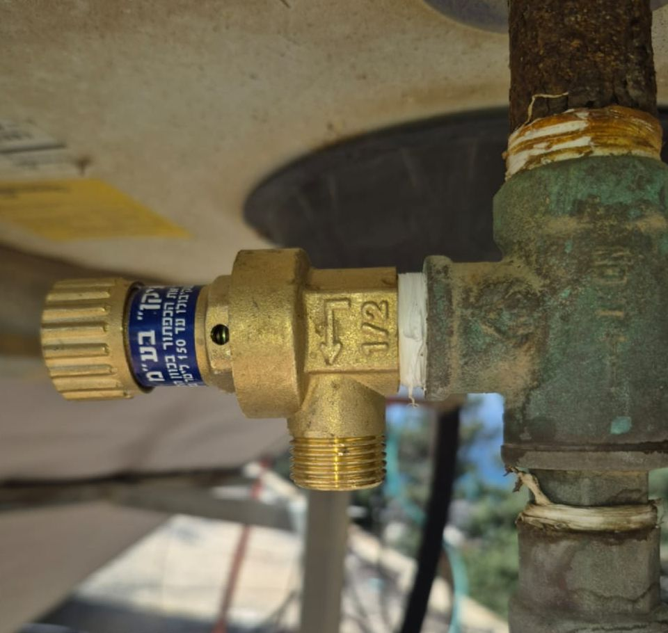
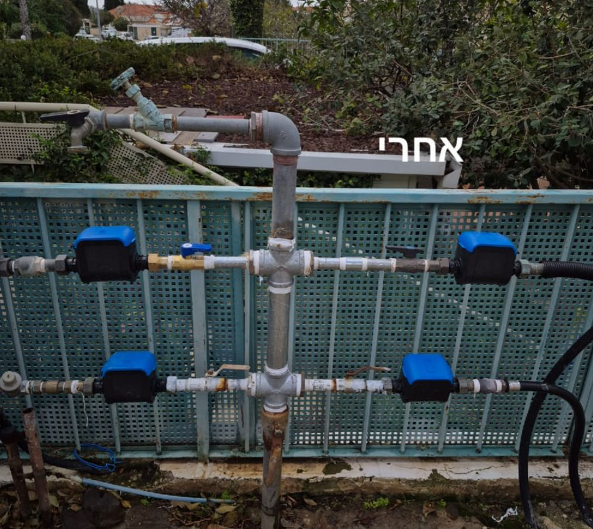
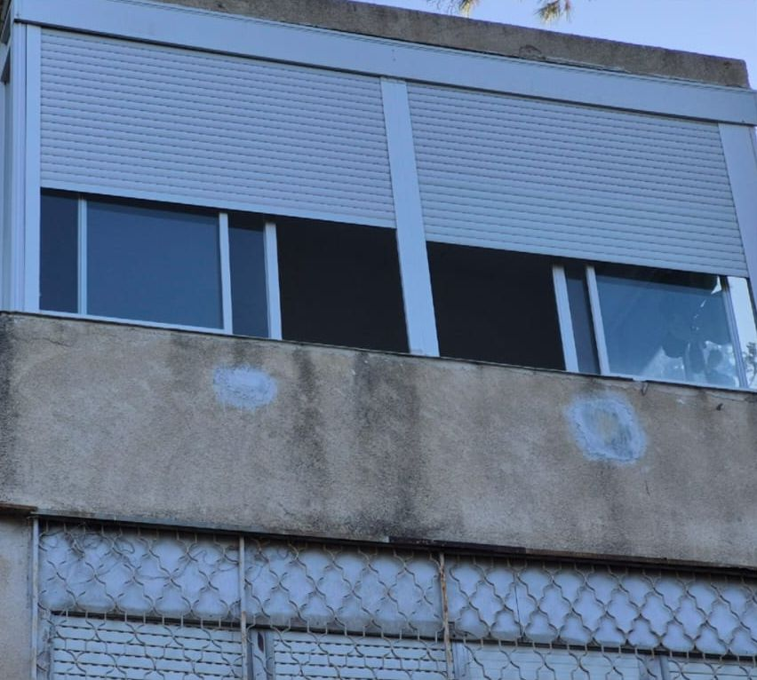
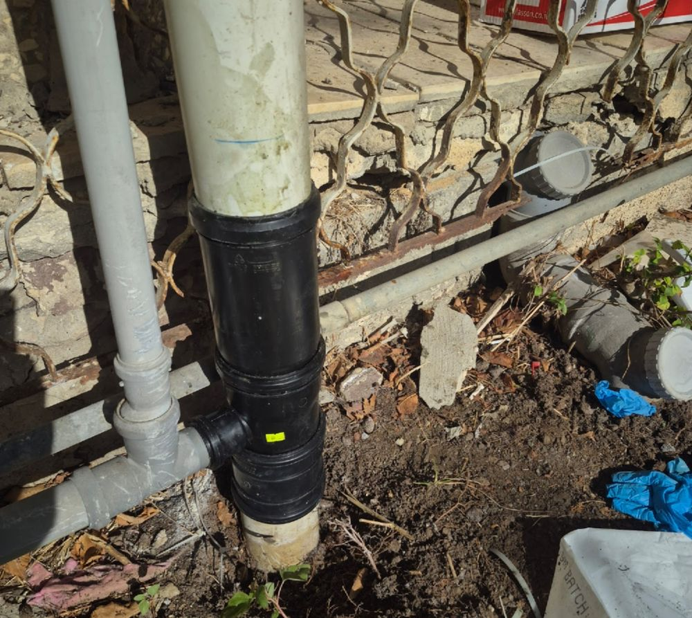
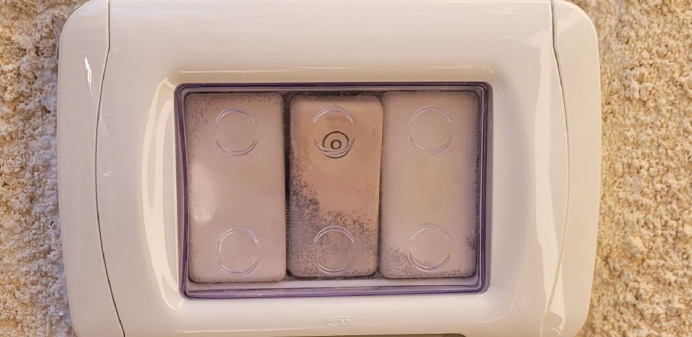
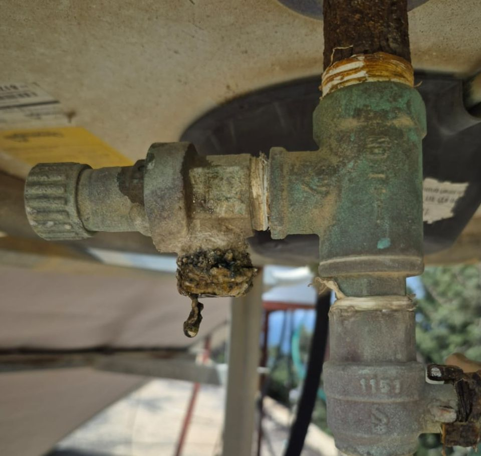
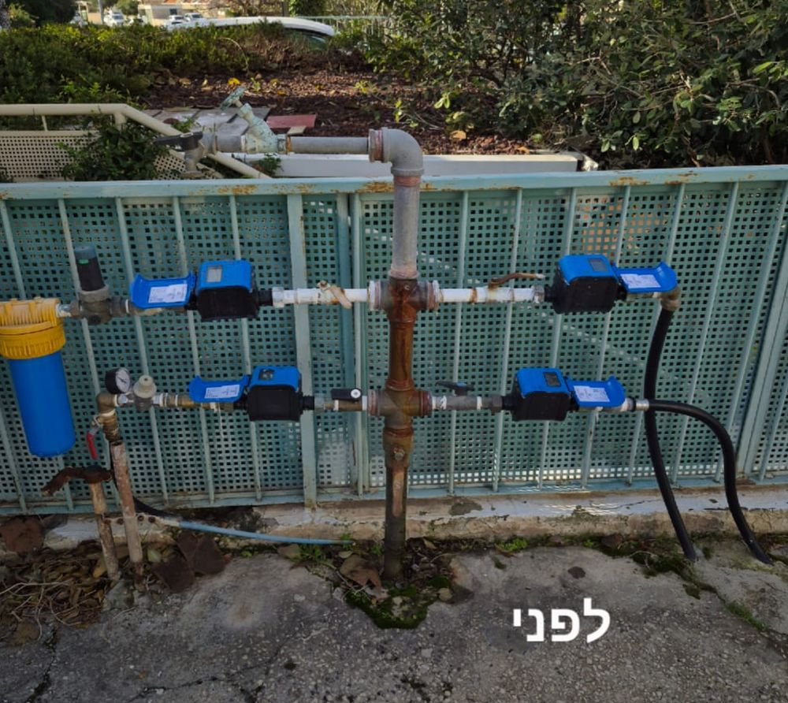
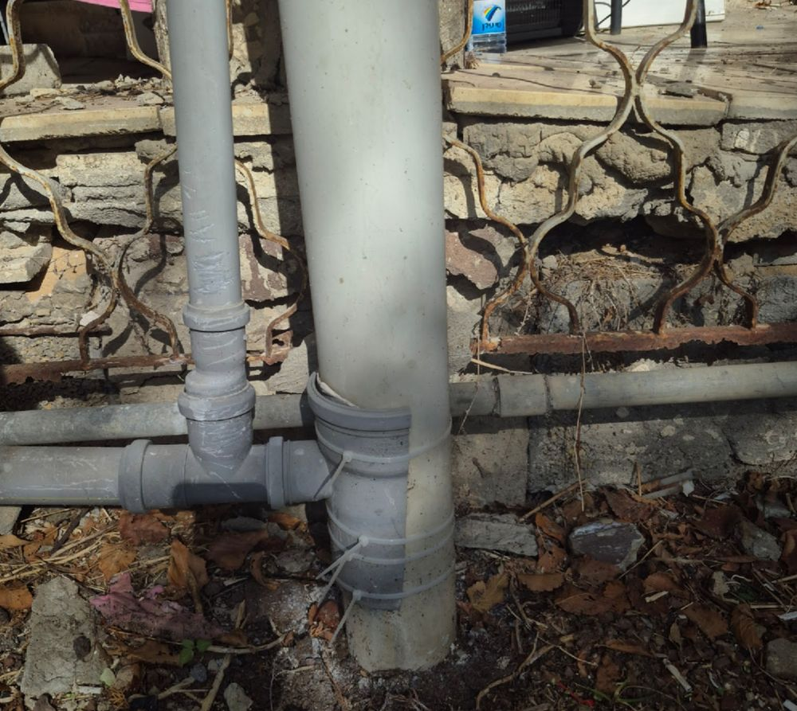
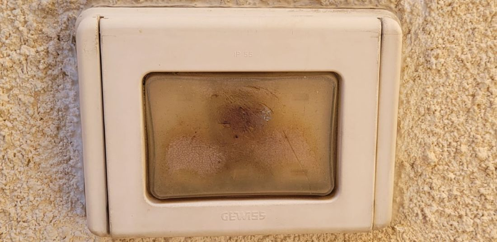
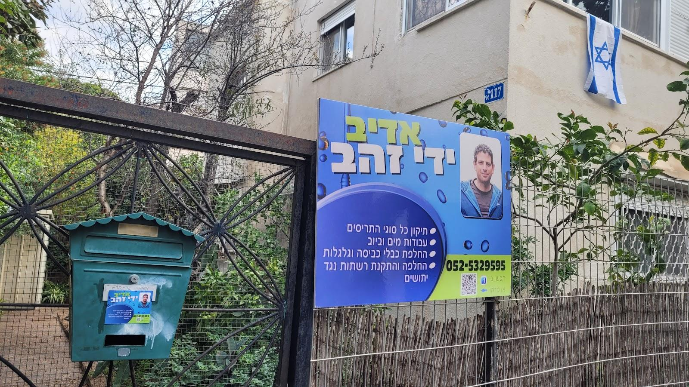

תריסיםShutters
רצועה, קפיץ, שלבים ומנוע. גם שדרוג לתריס חשמלי.Belts, springs, slats and motors. Upgrades to electric too.
קונספט לדוגמה שנבנה עבור אדיב ידי זהב · זה אינו האתר הרשמי של העסקA sample concept built for Adiv Yedei Zahav · This is not the business’s official website
חגי מתקן ומתקין בבית: תריסים, אינסטלציה, דוודים, תלייה והרכבה. בחיפה.Hagai repairs and installs around the home: shutters, plumbing, water heaters, hanging and assembly. In Haifa.





ארבע עבודות של חגי, מהתמונות שלו בגוגל.Four of Hagai’s jobs, from his own Google photos.
העבירו את העכבר על התמונה כדי לראות איך זה היה לפניהחזיקו אצבע על התמונה כדי לראות איך זה היה לפניגררו את העיגול כדי לראות לפני ואחריMove over the photo to peek at the beforeHold a finger on the photo to peek at the beforeDrag the circle to see before and after





“שמי חגי, ואני בעל מקצוע בתחום מזה למעלה מ-20 שנה.”“My name is Hagai, and I’ve worked in this trade for more than 20 years.”
רצועה, קפיץ, שלבים ומנוע. גם שדרוג לתריס חשמלי.Belts, springs, slats and motors. Upgrades to electric too.
סתימות, נזילות, סיפונים וברזים.Blockages, leaks, siphons and taps.
מכל המותגים.All brands.
תיקון דוודים.Water heater repairs.
וילונות, מדפים, טלוויזיות ותמונות.Curtains, shelves, TVs and pictures.
התקנת גופי תאורה.Light fixtures fitted.
שידות, ארונות, מדפים וכוורות.Dressers, wardrobes, shelves and cube units.
ידיות אחיזה ותאורה לכבדי ראייה.Grab bars and lighting for low vision.
רשתות נגד יתושים, חבלים וגלגלות.Insect screens, lines and pulleys.
חגי היה מצוין! תיאם איתי הגעה בזמן סביר מראש, ענה במהירות ובאדיבות בוואטסאפ, הגיע בדיוק בזמן, היה מסביר פנים ונעים מאוד. ביצע את העבודה במהירות ובמקצועיות גבוהה - הרשת הוחלפה בצורה נקייה ואיכותית. בהחלט ממליץ!
Hagai was excellent! He arranged a visit with me ahead of time, answered quickly and politely on WhatsApp, arrived right on time, and was friendly and very pleasant. He did the job quickly and very professionally; the screen was replaced cleanly and well. Highly recommended!
עבודה מקצועית ואמינה! תיקן לי את כל התריסים בבית ונתן לי טיפים על איך אפשר להימנע מתקלות בהמשך. ממליצה בחום!
Professional, reliable work! He fixed all the shutters in my home and gave me tips on how to avoid problems later. Warmly recommended!
עבודת תיקון תושבת תריס חשמלי. הגיע מהר, היה אדיב ועבד בצורה נקייה ומהירה.
Repairing an electric shutter’s mount. He came quickly, was courteous, and worked cleanly and fast.
חגי הגיע בזמן, עבד בצורה מאוד מקצועית ופתר את הבעיה בצורה יסודית. השירות היה אדיב ואמין, והמחיר הוגן.
Hagai arrived on time, worked very professionally and solved the problem thoroughly. The service was courteous and reliable, and the price was fair.
חגי מקצועי. עונה מיד לפניות בכל שעה שמתקשרים… במקרים שהנושא לא בתחום מקצועו מיד ממליץ על בעל מקצוע אחר שיוכל לפתור הבעיה. מאד ממליצה עליו.
Hagai is a professional. He answers right away whenever you call… When something is outside his trade, he immediately recommends another professional who can solve it. I highly recommend him.
החלפת רצועה או קפיץ מתיחה בתריס גלילה, הוספת שלבים, החלפת שלבים שבורים בתריס רפפה, החלפת מנוע חשמלי, ושדרוג של תריס פשוט לתריס חשמלי.Replacing a roller shutter’s belt or tension spring, adding slats, replacing broken louvre slats, replacing an electric motor, and upgrading a manual shutter to an electric one.
כן. ניאגרות רגילות וסמויות מכל המותגים, בהם Geberit, Grohe ו-Villeroy & Boch.Yes. Regular and concealed cisterns of all brands, among them Geberit, Grohe and Villeroy & Boch.
ידיות אחיזה בשירותים ובאמבטיה, חיזוק תאורה לכבדי ראייה, ומסך עינית אלקטרוני בגובה נמוך לדלת הראשית.Grab bars in the toilet and bathroom, stronger lighting for people with low vision, and a low-mounted electronic door viewer at the front door.
כן, כל סוגי הרהיטים מאיקאה: שידות, שולחנות, מדפים, ארונות, כוורות ועוד.Yes, every kind of IKEA furniture: dressers, tables, shelves, wardrobes, cube units and more.
באזור חיפה. העסק נמצא בשדרות מוריה 117א.The Haifa area. The business is at 117A Moriah Blvd.